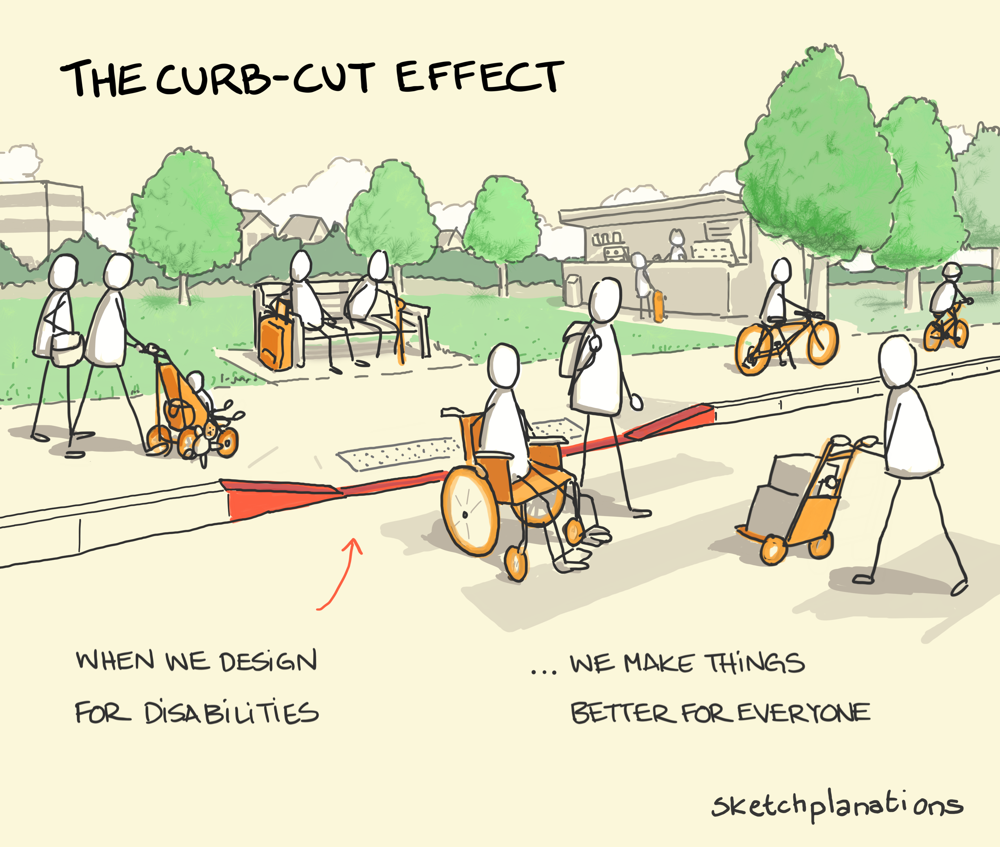

Content from What Makes a Good Teacher?
Last updated on 2024-05-01 | Edit this page
Overview
Questions
- How do you identify an effective instructor?
Objectives
- Identify your own subjective view on the qualities of effective and ineffective instructors
- Consider which of these qualities were the same vs different across the group
An Incomplete List
It’s likely that your favorite teacher:
- was well-prepared to teach their subject;
- shared a clear pathway for what and how they wanted you to learn;
- taught a subject that was interesting or useful for you;
- made you feel actively engaged in the learning process;
- made you feel challenged but not overwhelmed;
- gave you space to ask questions or challenge them;
- made you feel safe;
- didn’t shame you for lack of knowledge;
- was responsive to your needs;
- wasn’t condescending;
- assumed that you had potential;
- acknowledged your growth;
- provided kind and useful feedback.
Our goal over the next two weeks is to equip you with foundational knowledge and practice about learning and teaching. We hope that these first steps will set you up well to grow as an instructor in the years to come.
It’s Okay If You Don’t Like Teaching
There are many people who love teaching and want to be in the classroom, but who have not yet learned the skills to teach effectively. On the flip side, there are people who do not have a particular passion for teaching, but who are still excellent instructors. These people have learned the techniques and practices of effective instruction. Even if you never love teaching, you can employ the skills you’re about to learn to provide the best possible experience for both you and your students.
Key Points
- As an instructor, you are responsible for creating a safe and engaging learning environment for course participants
- There are many different types of great instructor, but some features are shared
- The coming weeks will teach you foundational teaching skills, while giving you space to practice and find your own educational voice.
Content from A Growth Mindset for Learners and Instructors
Last updated on 2024-05-01 | Edit this page
Overview
Questions
- What is a growth mindset?
- How do you practice a growth mindset as a instructor?
Objectives
- Model a growth mindset in the classroom.
- Provide feedback using the ASK guidelines.
- Accept feedback and critique with grace and thoughtfulness
Discussion: Art Project
Imagine that one day, a child draws a picture of a tree. He shows it to his older sister, his mother, and his aunt.
His older sister says, “That’s a terrible drawing, you’re bad at art.”
His mother says, “That drawing is perfect!! You’re an amazing artist!”
His aunt says, “This is so good! I love the details around the leaves. I bet it would look beautiful next time if you tried putting some darker shading behind the trunk.”
How do you think the child felt after receiving each of these three pieces of feedback?
How We View Ourselves Affects How We Learn
The exercise above showed people giving three different types of feedback. The sister gave harsh negative feedback, claiming that the child was categorically bad at art. The mother gave gushing positive feedback, claiming that the child was categorically good at art. The aunt gave some positive feedback, while also gently suggesting ways that the child might improve in the future.
The child’s mother and sister were both demonstrating what psychologist Carol Dweck calls a fixed mindset. This is the belief that ability or intelligence is born rather than made. The child’s aunt, on the other hand, was demonstrating the belief that ability can be acquired through effort– a growth mindset. Especially when learning something that feels complex or intimidating, a fixed mindset can interfere with motivation and growth in a number of ways, as laid out in this diagram:
It’s important for you to try and encourage a growth mindset in your learners, and the best way to do so is to embody a growth mindset yourself. Let’s go through a few common challenges instructors encounter and consider how we might bring a growth mindset to them.
Exercise: Teaching Troubles
How might someone with a fixed mindset respond to each of these common challenges? What about someone with a growth mindset?
- A learner asks you a question you don’t know the answer to.
- You’re doing a live coding demonstration, and your code throws an error when you didn’t expect it to.
- You’re helping someone write a few lines of code, but they’re a slow typer. It would be faster if you took their computer and did it yourself as they watched.
- A student is feeling frustrated and tells you, “I’m just no good at coding!”.
We’ll go into more detail about how to cultivate a growth mindset in the classroom next week. But for now, let’s spend a little time cultivating a growth mindset in ourselves by practicing giving and receiving feedback.
ASK for Feedback: Actionable, Specific, and Kind
There are many metaphors and acronyms designed to help people give good feedback. One of our favorites is called the ASK framework. It recommends that any feedback you provide to someone should be:
- Actionable: If you critique someone on something they have no power to change, your feedback has limited power to help them grow. Furthermore, they may wind up feeling demotivated, or even defensive. Stick to the possible.
- Specific: “Make it better” is actionable feedback, but it doesn’t really help guide someone towards a better product. It’s much more helpful to specify where, how, and why you’re recommending changes. For example, “I think the narrative is clearer if you switch these two paragraphs”, or “on line 76, you’re taking the median value of your data, but it would be more appropriate to take the mean”.
-
Kind: Even if you strongly dislike the thing you’re
critiquing, it’s likely that someone spent a lot of time and effort on
it. If you have ever had someone absolutely rip apart something
meaningful to you, you know how crushing it can be. Think about the
words you use. If you’re speaking to someone directly, think about your
body language and tone. Remember what it felt like the last time someone
was gentle with you. There are two sub-strategies that work well to
support kind feedback:
- Good news first: Start by talking about the aspects of the work you enjoyed, and acknowledging the effort that went into it. This helps the feedback receiver to feel secure and open to receiving more critical comments.
- “I” statements: When you are, for example, reviewing a paper, sometimes it’s tempting to say “this section is confusing.” But you don’t actually know that for sure! It was confusing to you, but clearly it made sense to the person who wrote it, and maybe it would also make sense to someone else. When you give feedback, instead consider saying “I was confused by this section because…” and continue with actionable, specific feedback. This is both a more true reflection of your critique, and a kinder way of providing comments.
Ask to ASK
There’s another reason we love the acronym ASK for feedback: it reminds us that the giving of feedback should always be preceded by a question. Usually, someone asks you for feedback, but occasionally it’s also appropriate for you to ask someone if they would like your opinion. Ideally, requests to receive or give feedback should also follow the ASK protocol. For example, say “Hey, I made a figure for a paper but I’m not sure if it’s easy to understand, could you tell me what story this plot tells you?” instead of “What do you think of this plot?” This will help guide the feedback-giver toward the actual type of advice you’re hoping to receive.
Managing Discomfort
Even when feedback is actively solicited and given in the kindest possible way, it can feel terrible to receive. Many of us, especially those of us who grew up with a fixed mindset, often want our first try to be perfect. When someone gives us tips on how to improve, we can feel humiliated, defensive, and demotivated, because we have not lived up to the standard we set for ourselves.
The process of sitting with and moving past the discomfort that comes with feedback is a crucial component of developing a growth mindset. Everyone develops their own strategy to work through this. Here’s an example of how one of your instructors does it:
- For a few minutes, let myself feel whatever I need to. That person just didn’t understand me! What do they know anyway? Oh no, am I terrible at this? What if I’m never successful?
- Start to “reality test” those high-emotion thoughts. Do I really think the person who gave me feedback didn’t know what they were talking about? Do I really think that I’m bad at this, or am I proud of the effort I put in? Don’t I want to learn how to do better? Isn’t the only way to be successful to keep trying?
- When I’m ready, sit back down with the feedback and really think through it. What good points did this person make? What feedback can I respectfully decline? It’s usually at this point that I actually start getting excited about incorporating the feedback, because I can see how it will make my work stronger.
- Continue incorporating and refining the feedback. At this point I’m usually really happy and grateful that I asked for help. If I can, I’ll thank the person who gave me feedback. I might feel kind of silly for how I responded before, but I know that it’s a human response that will happen again. I trust myself to handle it appropriately next time it happens.
Exercise: Giving and Receiving Feedback
Choose something that you’re working on, like:
- A font you’re using in a document
- A plot you made
- Something you’re considering buying.
Using the ASK guidelines, ask the person sitting next to you to give you some feedback about the thing you’ve selected. Then switch and do the same for them. What feedback was challenging to give or receive?
How did this exercise make you feel? What was easy? What was surprisingly difficult?
Key Points
- A growth mindset helps provide an effective educational environment for you and your learners.
- When giving feedback, we should be Actionable, Specific, and Kind
- Feeling and managing discomfort is a common part of receiving feedback. Managing discomfort will help you accept feedback and grow from it.
Content from Skill Levels, Mental Models, and Misconceptions
Last updated on 2024-05-01 | Edit this page
Overview
Questions
- How do people learn?
- Who is a typical data science/modeling learner?
- How can we help novices become competent practitioners?
Objectives
- Compare and contrast the three stages of skill acquisition.
- Identify a mental model and an analogy that can help to explain it.
- Apply a concept map to explore a simple mental model.
- Understand the limitations of knowledge in the absence of a functional mental model.
- Create a formative assessment to diagnose a broken mental model.
Note: This content was modified from in the Carpentries Instructor Training.
We will now get started with a discussion of how learning works. We will begin with some key concepts from educational research and identify how these principles are put into practice in Carpentries workshops.
The Carpentries Pedagogical Model
The Carpentries aims to teach computational competence to learners. Following them, in this course we take an applied approach, avoiding the theoretical and general in favor of the practical and specific. By showing learners how to solve specific problems with specific tools and providing hands-on practice, we develop learners’ confidence and lay the foundation for future learning.
A critical component of this process is that learners are able to practice what they are learning in real time, get feedback on what they are doing, and then apply those lessons learned to the next step in the learning process. Having learners help each other during the workshops also helps to reinforce concepts taught during the workshops.
We believe that a workshop is an interactive event – for learners and instructors. We give and receive feedback throughout the course of a workshop. We incorporate assessments within the lesson materials and ask for feedback on sticky notes during lunch breaks and at the end of each day.
One reason why practice and feedback are so important is because a workshop is not simply a source of information; it is the starting point for development of a new skill. To understand what this means, we will start by exploring what research tells us about skill acquisition and development of a “mental model.”
The Acquisition of Skill
Our approach is based on the work of researchers like Patricia Benner, who applied the Dreyfus model of skill acquisition in her studies of how nurses progress from novice to expert (see also books by Benner). This work indicates that through practice and formal instruction, learners acquire skills and advance through distinct stages. In simplified form, three stages of this model are:

-
Novice: someone who does not know what they do not know, i.e., they do not yet know what the key ideas in the domain are or how they relate. Novices may have difficulty formulating questions, or may ask questions that seem irrelevant or off-topic as they rely on prior knowledge, without knowing what is or is not related yet.
Example: A novice learner in a data visualization workshop might never have made a plot using code, and may have no understanding of how to load data into an R or Python workspace, much less visualize it.
-
Competent practitioner: someone who has enough understanding for everyday purposes. They will not know all the details of how something works and their understanding may not be entirely accurate, but it is sufficient for completing normal tasks with normal effort under normal circumstances.
Example: A competent practitioner in a data visualization workshop might have used
ggplot2ormatplotlibbefore and knows how to generate common plots (line, scatter, bar) using default color schemes, but may not know how to customize appearance, labeling, color, or faceting. -
Expert: someone who can easily handle situations that are out of the ordinary.
Example: An expert in a data visualization workshop may have extensive experience creating high-quality plots for publication and presentation, as well as an understanding of visualization theory. When presented with complex data to visualize, they may immediately come up with creative ideas to tell an effective story.
Note that how a person feels about their skill level is not included in these definitions! You may or may not consider yourself an expert in a particular subject, but may nonetheless function at that level in certain contexts. We will come back to the expertise of the instructor and its impact – positive and negative – on teaching, in a few episodes. For now, we are primarily concerned with novices, as this is often our primary target audience.
It is common to think of a novice as a sort of an “empty vessel” into which knowledge can be “poured.” Unfortunately, this analogy includes inaccuracies that can generate dangerous misconceptions. In our next section, we will briefly explore the nature of “knowledge” through a concept that helps us differentiate between novices and competent practitioners in a more useful and visual way. This, in turn, will have implications for how we teach.
Building a Mental Model
Understanding is never a mirror of reality, even for an expert; rather, it is an internal representation based on our experience with a subject. This internal representation is often described as a mental model. A mental model allows us to extrapolate, or make predictions beyond and between the narrow limits of experience and memory, filling in gaps to the point that things “make sense.”
As we learn, our mental model evolves to become more complex and, most importantly, more useful. A useful model makes reasonable predictions and fits well within the range of things we are likely to encounter. While there will always be inaccuracies – or “misconceptions” – these do not interfere with day-to-day functioning. A useful model does not seize up or break down entirely as new concepts are added.
The power (and limitations) of analogies
Some mental models can be succinctly summarized by comparison to something else that is more universally understood. Good analogies can be extraordinarily useful when teaching, because they draw upon an existing mental model to fill in another, speeding learning and making a memorable connection. However, all analogies have limitations! If you choose to use an analogy, be sure its usefulness outweighs its potential to generate misconceptions that may interfere with learning.
Analogies at Work: “Software Carpentry”
People often ask where our name came from. Greg Wilson has this to say:
“Brent Gorda and I came up with the name in 1998 to differentiate what we were teaching from software engineering. That’s about digging the Channel Tunnel; we’re about the computational equivalent of hanging drywall.”
The word “carpentry” acts as a metaphor – a type of analogy – inspiring a comparison with something concrete, hands on, practical, and useful. This clearly conveys the purpose of our organization: to support computational skill development among working practitioners who need the right tools and practices to be effective day to day.
A mental model may be represented as a collection of concepts and facts, connected by relationships. The mental model of an expert in any given subject will be far larger and more complex than that of a novice, including both more concepts and more detailed and numerous relationships. However, both may be perfectly useful in certain contexts.
Returning to our example levels of skill development:
- A novice has a minimal mental model of surface features of the domain. Inaccuracies based on limited prior knowledge may interfere with adding new information. Predictions are likely to borrow heavily from mental models of other domains which seem superficially similar.
- A competent practitioner has a mental model that is useful for everyday purposes. Most new information they are likely to encounter will fit well with their existing model. Even though many potential elements of their mental model may still be missing or wrong, predictions about their area of work are usually accurate.
- An expert has a densely populated and connected mental model that is especially good for problem solving. They quickly connect concepts that others may not see as being related. They may have difficulty explaining how they are thinking in ways that do not rely on other features unique to their own mental model.
Mapping a Mental Model
Most people do not naturally visualize a mental model as a diagram of concepts and relationships. Mental models are complicated! Yet, visual representation of concepts and relationships can be a useful way to explore and understand hidden features of a mental model.
There are certain ways in which you may routinely use visual organizers, such as flow charts or biochemical pathway diagrams. A more general tool that is useful for exploring any network of concepts and relationships is a concept map. Pioneered for classroom use by John Novak in the 1970s, a concept map asks you to identify which concepts are most relevant to a topic at hand and – critically – to identify how they are connected. It can be quite difficult to identify and organize these connections! However, the process of forcing abstract knowledge into a visual format can force you to name connections that you might otherwise have quietly assumed, or illuminate gaps that you may not have been aware of. Especially where analogies are not available, concept mapping can help you to make your mental model of a concept more clear to yourself or others.
As an example, consider a mental model of the relationship between a small ball and water in a full glass.
The concept map below illustrates a simple mental model that a young child might develop after putting the ball in the water.
Give a child balls of three different sizes, and they might put together a somewhat more complex mental model, perhaps illustrated as:
Was this difficult? Did it help you consider your topic of choice
more deeply? What challenges would a novice face in creating a concept
map of this kind?
This exercise should take about 5 minutes.
Misconceptions
The mental model above connects a ball to the water it can displace, recognizing that ‘more’ ball can move ‘more’ water. This mental model is perfectly functional for a child who wants to have fun splashing water around. It may endure in this way for several years of beaches and bathtubs.
However, when this child is asked to predict what would happen to the water if a ball were not bigger or smaller but heavier or lighter, they will naturally apply their existing mental model to the task. BUT…
What a surprise! The challenge presented by this new information is that it clashes with the pre-existing mental model, to which it seemed to apply. This prior knowledge needs to be adjusted to a new understanding that incorporates the difference between properties of mass and volume.

When mental models break, learning can occur more slowly than you might expect. The longer a prior model was in use, and the more extensively it has to be unlearned, the more it can actively interfere with the incorporation of new knowledge. Our child may quickly adapt to this new information if they had never thought much about mass before and were simply trying out an existing mental model on a new situation. However, if they had extensive experience with balls that were both larger and heavier (for example), it may take longer to unlearn what they thought they understood about mass.
Most mental models worth mapping are not so simple. Yet, forcing complex ideas in to this simplified format can be useful when preparing to teach, because it forces you to be explicit about exactly what concepts are at the heart of your topic, and to name relationships between them.
Types of Misconceptions
Correcting learners’ misconceptions is at least as important as presenting them with correct information. There are many ways of classifying different types of misconceptions. For our purposes, it is useful to consider 3 broad categories:
- Simple factual errors. These exist in isolation from any deeper understanding. These are the easiest to correct. Example: believing that Dar es Salaam is the capital of Tanzania.
- Broken models. These occur when inaccuracies explain relationships and generate predictions (often successfully!) in an existing mental model. These take time to address, demanding that learners reason carefully through examples to see contradictions. Examples: believing that humid air causes malaria, or that seasons are related to the shape of the earth’s orbit.
- Fundamental beliefs, which are deeply connected to a learner’s social identity and are the hardest to change. Examples: “the world is only a few thousand years old” or “human beings cannot affect the planet’s climate”. “I am not a computational person” may, arguably, also fall into this category of misconception.
The middle category of misconceptions is the most useful type to watch out for in workshops. While teaching, we want to expose learners’ broken models so that we can help them begin to deconstruct them and build better ones in their place.
Using Formative Assessment to Identify Misconceptions
In order to effectively root out pre-existing misconceptions that need to be un-learned and stop quietly developing misconceptions in their tracks, an instructor needs to be actively and persistently looking for them. But how?
Like so many challenges we will discuss in this training, the answer is feedback. In this case, we want feedback that allows us to assess the developing mental model of a trainee in highly specific ways, to verify that learning is proceeding according to plan and not careening off in some unpredicted direction. We want to get this feedback while we teach so that we can respond to that information and adapt our instruction to get learners back on track.
This kind of assessment has a name: it is called formative assessment because it is applied during learning to form the practice of teaching and the experience of the learner. This is different from exams, for example, which sum up what a participant has learned but are not immediately used to guide further progress and are hence called summative.
Feedback from formative assessment illuminates misconceptions for both instructors and learners. It also provides reassurance on both sides when learning is proceeding on track! It is far more reliable than reading faces or using feelings of comfort as a metric, which tends to be what instructors and learners default to otherwise.
Formative assessments can serve many purposes other than hunting down misconceptions, such as verifying engagement or supporting memory consolidation. We will discuss some of these functions in later episodes. In this section, we are interested quite narrowly in evaluating mental models.
One example of formative assessment that can be used to tease out misconceptions is the multiple choice question (MCQ). When designed carefully, these can target anticipated misconceptions with surgical precision. For example, suppose we are teaching children multi-digit addition. A well-designed MCQ would be:
Q: what is 27 + 15 ?
a) 42
b) 32
c) 312
d) 33The correct answer is 42, but each of the other answers provides valuable insight.
- If the child answers 32, they are throwing away the carry completely.
- If they answer 312, they know that they cannot just discard the carried ‘1’, but do not understand that it is actually a ten and needs to be added into the next column. In other words, they are treating each column of numbers as unconnected to its neighbors.
- If they answer 33 then they know they have to carry the 1, but are carrying it back into the same column it came from.
Each of these incorrect answers has diagnostic power: each of the wrong choices helps the instructor figure out precisely what misconceptions learners have adopted when they select that choice. Each answer looks like it could be right. Silly answers like “a fish!” are funny but do not provide insight; nor do answers that are wrong in random ways.
Formative assessments are most powerful when:
- all learners are effectively assessed (not only the most vocal ones!) AND
- an instructor responds promptly to the results of the assessment
An instructor may learn they need to change their pace or review a particular concept. Using formative assessment effectively to discover and address misconceptions is a teaching skill that you can develop with reflective practice.
- If the majority of the class votes for a single wrong answer, you have a widespread misconception and can stop to examine and correct that misconception.
- If most of the class votes for the right answer, it is ok to explain the answer and move on. Helpers can make themselves available to assist anyone who still feels uncertain.
- If answers are pretty evenly split between options, learners may be guessing randomly, reflecting an absent mental model rather than a broken one. In this case it is a good idea to go back to a point where everyone was on the same page.
Designing a few MCQs with diagnostic power is useful when preparing to teach even if they are never used, for the same reason that concept mapping can be useful: it forces the instructor to think about the learners’ mental models and try to anticipate how they might be broken. In short, it helps Instructors to put themselves into the learners’ heads and see the topic from their point of view. We will talk more about the process of preparing to teach in a later episode.
The Importance of Going Slowly
It takes work to actively assess mental models throughout a workshop; this also takes time. This can make Instructors feel conflicted about using formative assessment routinely. However, the need to conduct routine assessment is not the only reason why a workshop should proceed more slowly than you think.
One key insight from research on cognitive development is that novices, competent practitioners, and experts each need to be taught differently. In particular, presenting novices with a pile of facts early on is counter-productive, because they do not yet have a model or framework to fit those facts into. In fact, presenting too many facts too soon can actually reinforce an incorrect mental model. (This is a key problem with the “empty vessel” analogy described earlier.)
Learners coming to data science workshops may be novices, and do not have a strong mental model of the concepts we are teaching. Thus, our primary goal is not to teach the syntax of a particular programming language, but to help them construct a working mental model so that they have something to attach facts to. In other words, our goal is to teach people how to think about programming and data management in a way that will allow them to learn more easily on their own or understand what they might find online.
If our goal is to help novices construct an accurate and useful mental model of a new intellectual domain, this will impact our teaching. For example, we principally want to help learners form the right categories and make connections among concepts. We do not want to overload them with a slew of unrelated facts, as this will be confusing.
An important practical implication of this latter point is the pace
at which we teach.
In the data visualization training Gloria Shirima ran in
Kigali, we only covered two types of plot (line and scatter) for
three hours of teaching. An hour and a half per command may seem
glacially slow, but that course’s real purpose was to teach learners
about the fundamental theory of plot creation, especially the concepts
of layers and aesthetic mappings. From that foundation, constructing
more involved and complex plots will be much easier.
That mental model of ggplot also includes things like:
- Creating informative variable names (so you can differentiate between a multiple of plots in one script).
- Writing code in scripts rather than the console (to ensure you don’t lose it).
Learning consists of more than “just” adding information to mental models; creating linkages between concepts and facts is at least as important. Telling people that they should name things nicely and consistently, and that they should focus on the location and protection of the code they write, both set the stage for discussing of code hygiene and replicability. We’re laying foundations of the practices we want to promote even when not discussing them directly.
Meeting Learners Where They Are
Strong workshops is that we meet learners where they are. Instructors strive to help learners progress from whatever starting point they happen to be at, without making anyone feel inferior about their current practices or skillsets. We do this in part by teaching relevant and useful skills, building an inclusive learning environment, and continually getting (and paying attention to!) feedback from learners. We will be talking in more depth about each of these strategies as we go forward in our workshop.
Key Points
- Our goal when teaching novices is to help them construct useful mental models.
- Exploring our own mental models can help us prepare to convey them.
- Constructing a useful mental model requires practice and corrective feedback.
- Formative assessments provide practice for learners and feedback to learners and instructors.
Content from Lesson Design
Last updated on 2024-05-01 | Edit this page
Overview
Questions
- What are the recommended steps to take when developing a new lesson?
- What lesson do you want to develop during and after this workshop?
Objectives
After completing this episode, participants should be able to…
- Explain the lesson design process we will be adopting for this course.
- Summarise the lessons that participants will be working on.
Note: This content was modified from the Carpentries Collaborative Lesson Development Training.
Lesson building
Let’s imagine that tomorrow morning your boss knocks on your door and tells you that she needs you to prepare a data science training for a group of Master’s students that will be arriving next month. You know that the students have R installed and know how to run code, but have never worked with data before. You’re going to be giving a two-day workshop, five hours each day.
Also imagine that you can’t just go online and teach a ready-made data science course.
How will you begin building out your curriculum?
The world of data science is so vast that it’s difficult to know where to start. Probably, you started by listing off the topics that you thought were good beginner material, and then putting them in some sort of reasonable order so that you can write a lesson plan for each.
While this is a strategy that can result in good curricula, here we will be recommending a different way to develop lessons: one that begins with what skills you want the students to have by the end of the workshop. From there, you work backwards to determine what the course content should look like.
A Lesson Design Process
In order to design an effective lesson, we need a structured approach with the learner in mind and clearly identified goals. Throughout this training, we will use a modified version of Nicholl’s five phase paradigm for curriculum design1. Nicholls’ paradigm describes a process, commonly referred to as backward design, where those who wish to develop a new curriculum first begin by defining exactly what their learners will be able to do after they have completed the lesson/training/course. The subsequent stages of the curriculum design process involve designing content to directly meet those stated outcomes. The Carpentries developed the modified version of Nicholls’ system that we will use in this workshop:
- Define desired learning outcomes
- Design assessments to determine progress towards desired outcomes
- Write content to lead learners from one of these assessments to the next
- Assess learner progress towards outcomes during teaching
- Evaluate how closely the outcomes meet the objectives

Note that the assessment framework here focuses on formative, rather than summative, assessments. Because of the shorter nature of the course we focus on assessing and modifying progress while the teaching is still going on, to give instructors opportunities to evaluate the teaching and lesson content before the end of the workshop.
We will conduct a small summative assessment in the form of an exit survey that you will complete at the end of the session. This final survey will help us iterate and refine the content as a whole for future trainings.
Note the cyclical nature of the lesson design process: you will complete one iteration through this cycle during this training. Note also that teaching the content is an essential intermediate step in the process: the importance of feedback gathered while teaching the lesson will be a common refrain throughout this training.
Your Lesson
This training will provide many opportunities for discussion of your lessons. Providing some context now for the lessons that you will be creating will help the Trainers and other participants get involved in those discussions and give you feedback as you follow the process.
Group Work: Picking a Lesson Topic
Get together with your project teammate(s). Spend ten minutes deciding what small topic you would like to select to teach next week. Remember, it should be on the scale of the following examples:
- how to make a specific type of plot (line, scatter, bar, etc)
- how to customize the color scheme of a plot
- how to convert from one date-time type to another
- how a single function can help solve a common data cleaning problem
Fill out this short form to let us know who you’re working with and what topic you’re planning to present.
- What is the topic of the lesson that you plan to develop based on this training?
- What is motivating you to create this lesson?
Iterative Development
Over these two weeks, we will be focusing on helping you develop a single short lesson to teach the fundamentals of curriculum design. However, these same skills can be used to build out a much more extensive curriculum (like the one you’re learning now). And because so many of the skills you might be teaching are in high demand, it’s likely that you may be asked to conduct more trainings than you can possibly have the bandwidth for. Because of this, as you’re designing larger courses it may be useful to consider developing a pipeline for tested, shareable curricula that others can pick up and teach. The Carpentries have a lovely model for this type of sharing that we’d like to take a moment to discuss here.
The Carpentries community develops open source lessons, which can always be updated and may never be finished. A lesson can undergo many iterations before it reaches a relatively stable state. To reflect this, we encourage lesson developers to indicate the status of their lesson by labelling its progress through a lesson life cycle:
Each life cycle stage indicates the level of maturity of a lesson:
- pre-alpha: a first draft of the lesson is still being constructed.
- alpha: the lesson has been/is being taught by the original authors, but has not been fully tested.
- beta: the lesson is ready to be taught by instructors who have not been significantly involved in its developed to this point.
- stable: the lesson has been extensively tested by the authors and others. It can be considered broadly complete and unlikely to undergo any drastic changes without warning.
Although your lesson will probably remain in pre-alpha throughout this training, some of the content will be equally valuable at later stages and we will also point you towards resources to help with testing the lesson and gathering feedback.
Content from Identifying Your Target Audience
Last updated on 2024-05-01 | Edit this page
Overview
Questions
- Why is it so important to think about the target audience early in the process?
- How can you ensure that your lesson reaches the right audience?
Objectives
After completing this episode, participants should be able to…
- Describe the importance of aligning lesson design with the intended audience.
- Compose a list of prior knowledge required to follow a lesson.
Note: This content was originally published in the Carpentries Collaborative Lesson Development Training.
Target Audience
Given the limited time in a short-format training, it is vital to define the scope of the lesson, i.e. what people need to know before and what they will know after the lesson. Thinking carefully about the target audience will help you with this and defining desired learning outcomes (the first step of the lesson design). Prominently displaying a description of the target audience will also help attract people with the right motivation and relevant prior knowledge to attend your workshops.
Expertise
One of the most important things we can identify about our target audience is the level of expertise they will already have in relation to the skills taught by your lesson. Recall our conversation from last section about the three different stages of skill acquisition: novice, competent practitioner, and expert and how it directly correlates to the complexity of mental models these different groups have about a domain/topic.
Briefly, the novice is someone who does not know what they do not know, i.e., they do not yet know what the key ideas in the domain are or how they relate, the competent practitioner has enough understanding of the domain/topic for everyday purposes, and the expert is someone who can easily handle situations that are out of the ordinary and can immediately use their prior knowledge or skills when presented with a new problem in the domain.
When designing a new lesson, it is important to think about the level of expertise that you expect learners to arrive with for two reasons:
- It helps to predict what prior knowledge and mental
model learners will have of the lesson domain when they arrive. This
can enable you to make progress quickly by
- working to help learners recall (activate) that prior knowledge1,
- building on the conceptual understanding they already have2 and,
- perhaps most importantly, giving you some idea of what misconceptions they might arrive with. It is vital that misconceptions are identified and corrected early on, before learners try to incorporate new knowledge into a broken mental model. (More on this in Stay On Target.)
- People at different stages of this process need to be taught differently. For example, novices will learn more from lessons that include worked examples and are more tutorial-like i.e. focused on a specific task, with step-by-step explanations of the process, but without a lot of extra information that is not directly relevant. However, the same approach may actually hinder learning for competent practitioners who may be distracted by a step-by-step explanation of something they already have the prior knowledge of3. For learners at this level of expertise, lessons which include activities offering learners the freedom to explore options and develop their own solutions, are likely to be more effective.
Motivation
Furthermore, your lesson will be more effective if it aligns with the motivations of the target audience. Understanding the wants and needs of your target audience, what they know already and what kinds of problems they want to solve, will help you design a lesson that learners can see the value in. It will give them the impression that taking the lesson will be worthwhile (called positive expectancies in the literature).
We will look more at strategies to establish value and build positive expectancies in the next episode.
Be Specific
It can be tempting to identify a target audience only in vague terms, for example by writing that a lesson is aimed at “PhD students” or “early career researchers”. However, taking the time to focus on real people, or imagined personae, who represent your target audience will help you take time to consider the various aspects that can influence how much someone will learn from your lesson. It will also help you notice when the assumptions you are making about your target audience are unreasonable.
Most of all, it will help you stay connected to the fact that you are not your learners: they will arrive at the lesson with different priorities, interests, and challenges than your own.
Exercise: thinking about target audience (15 minutes total for both parts)
Part 1 (all, 5 minutes): think about a member of the target audience for your lesson, and answer the following questions in the context of your lesson topic:
- What is their background?
- What do they already know how to do?
- What do they want to do with the skills they will learn from your lesson?
- What problem will your lesson help them solve?
Share your answers with your collaborators. How do they compare? If you have identified different audiences, are they compatible? Or would your time be better spent focussing on one particular audience for this lesson?
Write 1-2 diagnostic questions, for use before the lesson is taught, to help you assess whether a respondent falls within the intended audience for your lesson.
Thinking more about target audience
There is more to consider about your target audience than we could capture with only the questions listed above. In your own time, you should think more about the other considerations you might need to make when writing a lesson for your audience.
For example, what vocabulary do they use? The terms you are teaching in your lesson might have a different meaning in your learners’ domain of expertise, and it can be helpful to prepare for and try to avoid confusion arising from this clash. Furthermore, might their primary language differ from yours? If so, how might this change the way you write the lesson?
Defining Prerequisite Knowledge
A very common challenge encountered in workshops is heterogeneity of expertise among the audience. When learners arrive at a workshop with a wide range of previous experience with the topic, it is difficult for the instructors to keep everyone engaged. Those who arrive with too little relevant knowledge and experience can struggle to follow the lesson content at the pace you expect, while those who arrive with too much are likely to become bored and despondent as their expectation of learning new skills is not met.
One way to try to guard against this is to publish the description of your target audience when you advertise a workshop teaching your lesson, alongside a list summarising the skills and conceptual knowledge you expect learners to arrive with. Another is to use the information you have about your target audience to ask questions of potential learners when they apply/register to join the workshop (like the diagnostic questionnaire you may have prepared in the exercise above), and use the answers they give to filter out those who fall outside your intended audience.
While valuable, this kind of pre-assessment should be approached with caution: people are often bad at self-assessment i.e. estimating our own ability to perform a task4. We can try to mitigate for this when designing the questions for a pre-workshop survey, leaving little room for inaccurate self-assessment to confound the results. But experience suggests it is very difficult to ensure that every learner in a workshop falls within the intended audience of a lesson.
Exercise: defining prerequisite knowledge (5 minutes)
Write a list of the skills/knowledge your learners will be required to have before they can follow your lesson.
If you are struggling with this exercise because your lesson audience is novices, think about skills like touch typing, using a web browser, or interacting with a command line or graphical interface. These are skills commonly overlooked by experts and competent practitioners.
Key Points
- We recommend an iterative lesson design process that begins with identifying the target audience, before defining learning outcomes, then creating assessments, writing explanatory content, and evaluating the lesson in a workshop.
- Thinking about the target audience early in the design process helps to ensure that your lesson is built around the needs and motivations of real people.
- Use the description of your target audience to help attract people with the appropriate interests and prior knowledge to your lesson.
See chapter 1, How Does Students’ Prior Knowledge Affect Their Learning?, of Ambrose et al. 2010.↩︎
See chapter 2, How Does the Way Students Organize Knowledge Affect Their Learning?, of Ambrose et al. 2010.↩︎
Content from Defining Lesson Objectives/Outcomes
Last updated on 2024-05-01 | Edit this page
Overview
Questions
- How can describing the things you intend to teach aid the process of writing a lesson?
- How can you be specific and realistic about what you will teach in your lesson?
- What are some of the risks associated with unrealistic or undefined expectations of a lesson?
Objectives
After completing this episode, participants should be able to…
- Explain the importance of defining specific, measurable, attainable, relevant and time-bound objectives for a lesson.
- Evaluate a written lesson objective according to these criteria.
Note: This content was originally published in the Carpentries Collaborative Lesson Development Training.

At this stage of the training, you should have a clear idea of who the target audience is for your lesson, and what knowledge, skills, and abilities you expect them to arrive with. Now it is time to consider the additional knowledge, skills, and abilities they will have by the time they leave: these are the learning outcomes of your lesson. It can feel strange to jump from one end of the process to the other like this, but clearly defining your goals early in the lesson development process is vital. As we will see in this episode, it helps you to determine the activities, examples, etc. that are appropriate for the lesson content, and provides a scope for what should and should not be included.
Why Focus on Skills?
To ensure your audience stays motivated, and your lesson feels relevant to them, we recommend that lessons focus on teaching skills rather than tools. Lessons should be centred around what you are empowering learners to do, what will be most beneficial to them, rather than a list of functions or commands you are teaching them to use. Placing the emphasis on skills over tools will help you prioritise key concepts and consider how your lesson can have the biggest impact on the way learners do their work.
Learning Objectives
The desired outcomes (the learning objectives) of a lesson should be new skills, i.e. things that the learner can do. For the vast majority of lessons, these will be cognitive skills: things learners can do with their minds. (Lessons intended to teach other kinds of skill, such as woodwork, playing a musical instrument, or making sushi, are probably better suited to a different platform than a static website.) Cognitive skills cannot be equally easily acquired: before we can apply concepts and create something new, we must attain the ability to remember and distinguish between new concepts. Remembering and distinguishing are also abilities that are often faster to gain then applying or creating.
We must try to be realistic about how far along this scale we can move learners during a single workshop/lesson. This is one reason why the target audience is so important: if we can predict what learners will know when they arrive at the lesson, we can better define the outcomes we can expect when they leave.
Defining objectives for a lesson is essential because it allows us to focus the rest of our time on developing content that is necessary for learners to reach these goals. It will help us ensure we do not miss anything important or, conversely, include anything superfluous that could use up valuable time or distract instructors and learners.
What Does an Objective Look Like?
Objectives can be defined for a lesson as a whole - what should learners be able to do at the end of a workshop teaching this lesson? - and for individual sections within it - what should learners be able to do after following this particular part of the lesson? The objectives for the current section of this training are:
These should be read as if they were endings to a sentence beginning
“At the end of this session, learners should be able to …”
Each objective starts with a verb and describes one (and only one) skill the learner will obtain.
For objectives to be as helpful as possible, they need to be written in a way that will allow us to directly observe whether or not a learner has attained the skills we want them to. This means that the skills described by our objectives should be measurable: as a general rule, action verbs such as “explain,” “choose,” or “predict,” are more helpful than passive verbs such as “know,” “understand,” or “appreciate”, which are hard to directly assess and are often open to interpretation.
A popular aid for defining learning objectives is Bloom’s Taxonomy, which divides cognitive skills into several categories. The original taxonomy arranged these categories in a strict hierarchy, which has since been disputed. Regardless of whether these skills conform to such a hierarchy, Bloom’s Taxonomy serves as a very useful bank of action verbs for use in learning objectives.
We will see how helpful it can be to use action verbs in learning objectives when we begin talking about exercise design in the coming episodes.

SMART Objectives
To assist you in defining and writing learning objectives for your lesson, it can be helpful to turn to a popular framework for defining goals: SMART. Originally proposed to aid managers in the definition of business goals, and updated and adapted since to several other domains including education (see How to Write Well-Defined Learning Objectives for example1), the SMART acronym requires goals to be specific, measurable, attainable, relevant, and time-bound.
In the context of a lesson, SMART objectives should be:
- Specific: they should clearly describe a particular skill or ability the learner should have.
- Measurable: it should be possible to observe and ascertain when the learner has learned the skill/abilities described in the objectives.
- Attainable: the learner should realistically be able to acquire the skills or abilities in the time available in a workshop/by following the text of the lesson.
- Relevant: they should be relevant to the overall topic or domain of the lesson as a whole.
- Time-bound: they should include some timeframe within which the goal will be reached. For learning objectives, this is built into the approach described above.
Note that, for any lesson/curriculum that will be taught in a fixed amount of time, attainable and time-bound are overlapping: learning objectives for your lesson will answer the question “What will learners be able to do by the end of this lesson?” and the time available to teach the lesson, combined with the expected prior knowledge of your target audience, will determine how attainable they are.
Exercise: evaluating learning objectives (15 minutes)
Look at the example learning objectives below. Fill in the table for each objective, checking off the cells if you think an objective meets the criteria or leaving it unchecked if not. You should assume each objective is for a lesson to be taught in a two-day workshop. Note down any observations you make as you move through the list. If you have time, try to imagine the titles of lessons that would have these objectives. This part of the exercise should take 10 minutes.
At the end of this lesson, learners will be able to:
- create formatted page content with Markdown.
- program with Python.
- fully understand GitHub Actions.
| Objective | Action verb? | Specific | Measurable | Attainable |
|---|---|---|---|---|
| 1 | ||||
| 2 | ||||
| 3 |
In the last five minutes of the exercise, we will discuss as a group how each objective might be improved.
| Objective | Action verb? | Specific | Measurable | Attainable |
|---|---|---|---|---|
| 1 | ✅ | ❓ | ❓ | ✅ |
| 2 | ❓ | ❌ | ❌ | ❓ |
| 3 | ❌ | ❌ | ❌ | ❓ |
Objective 1 is the closest to what we ideally want in a lesson objective, but it illustrates how difficult it can be to make an objective truly specific. For example, a more specific and measurable version of this objective could be:
write links, headings and bold and italicised text with Markdown.
Lesson Scope
One of the major challenges of lesson design is choosing what to include in a lesson: what the main points will be, in what order they will be introduced, how much detail can be provided, and how much time can be spent on each point. Especially when writing lessons for short form training like a Carpentries workshop, difficult decisions often need to be made about what can and cannot be included. Trying to fit too much content into a lesson is counter-productive2, so it is good to avoid the temptation to cram in more content than you have time to cover properly.
Writing learning objectives is a good opportunity to begin thinking about this lesson scope, and can provide assistance when you are faced with a difficult decision about what content to cut out.
For instance, consider the order in which new skills must be acquired. Before learners can begin to acquire “higher-level” cognitive skills to perform creative and analytical tasks, they must first acquire the foundational knowledge and conceptual understanding of the domain. Furthermore, these higher-level skills take longer to acquire so, unless you can expect your target audience to arrive at the lesson with the relevant foundational knowledge and understanding, it is probably unrealistic to aim to have learners completing creative tasks before its end.
As should become clear through activities in the upcoming episodes, lessons can be broadly considered as blocks of content associated with a particular learning objective. This can be helpful when making choices about content to remove, because the task can be considered in the context of taking out whole learning objectives.
Defining Learning Objectives
We have discussed the importance of defining objectives early in the lesson design process, and looked at some examples of objectives written for other lessons. Now it is time to begin defining objectives for your own.
Here are some recommendations to help you get started:
- Aim for 3-4 objectives for every 6 hours your lesson will take to teach. (For example, this curriculum is designed to be taught in ~18 hours and has ten learning objectives.)
- These objectives are for your lesson as a whole: try to define the “end point” knowledge and skills you want learners to acquire. You can think of these as the things you would test in a fictional “final exam” your learners would be able to tackle.
- Later you will write “episode-level” objectives that should define intermediate steps towards the high-level objectives you identify for your lesson here.
Exercise: defining objectives for your lesson (20 minutes)
Write learning objectives for your lesson - what do you want learners to be able to do at the end of the workshop? When writing these lesson-level objectives, try to follow the SMART framework: make them specific, measurable, attainable, relevant, and time-bound.
Exercise: reviewing lesson objectives (15 minutes)
Swap objectives written in the previous exercise with a partner (you can also explain or show them what you wrote about your target audience, but this not essential) and review them with the following questions in mind:
- Are the objectives clear?
- Do they use “action” verbs?
- Could you directly observe whether a learner had reached this objective?
Now run the objectives through this Lesson Objective Advisor tool from the University of Manchester’s Faculty of Science and Engineering. Do the results match your assessment?
- Where do the skills described in these objectives sit on the scale?
- (optional) Are these objectives realistic, given the target audience of the lesson?
Advertising your lesson
These learning objectives, as well as the list of prerequisite knowledge you defined earlier, are very useful information to include when advertising a workshop that will teach your lesson. It will help people understand whether or not the event is a good fit for them, and manage their expectations about what they will learn if they attend.
Key Points
- Defining objectives for a lesson can help to focus your content on the most important outcomes, and outline the scope of the project.
- Following the SMART framework can help make your learning objectives as useful as possible.
- Leaving objectives unrealistic or undefined increases the risk of a lesson losing focus or spending time on activities that do not help learners gain the most important skills.
Content from Designing Assessments
Last updated on 2024-05-01 | Edit this page
Overview
Questions
- Why are exercises so important in a lesson?
- What are some different types of exercises, and when should they be used?
- Why should we create assessments before we have written the explanatory content of our lesson?
Objectives
After completing this episode, participants should be able to…
- Describe the importance of regular assessment while a lesson is being taught.
- Choose the format for an exercise based on the outcome it is intended to measure.
As we have seen previously, defining objectives for a lesson (or a teaching episode) can help to focus your content on the most important learning outcomes and outline the scope of your lesson project. The goal of the remaining steps of lesson development is to ensure that what learners learn from following your lesson matches its defined objectives as closely as possible. To do so, you need to develop assessments to monitor progression towards your learning outcomes.
Useful reading
Useful further reading: Course design: Considerations for Trainers – a Professional Guide.
Exercise Your Memory
In a simplified model of memory individuals are equipped with two types of memory: working (also called short-term) and long-term. Long-term memory essentially has unlimited storage but is slow to access, whereas working memory is quicker to access but can only hold a limited number of items at a time. For teaching, the goal is to help learners move the new things they’ve learned from working memory into long-term memory. One of the ways lesson developers can aid in this process is through exercises.
In addition to checking for misconceptions and broken mental models, exercises help move new skills and concepts into long-term memory by providing learners an opportunity to practice what was recently learned. These exercises should occur frequently throughout the lesson because they move items to long-term memory and free up learners’ working memory for new items.
Creating exercises builds upon the learning objectives you created earlier in the lesson design process. You can design exercises based on the actions/skills you described in your learning objectives (the learning outcomes you intend for the lesson). This will be easier if your wrote learning objectives with specific action verbs. Specific verbs can help you decide what action you want the learners to perform in the exercise. E.g. actions such as “explain” and “describe” may be better assessed by discussions and multiple choice questions, while “solve,” “construct,” “test” and other higher-level cognitive skills may be better assessed by debugging tasks, code-and-run, or use-in-a-different-context exercises.
Exercise: Exercise Types and When to Use Them (15 minutes)
The Trainers will assign you to pairs or small groups, and give each group an exercise type to focus on. Each group should assign a notetaker, to summarise your discussion at the end of the exercise.
Read about your given exercise type in the Exercise Types chapter of Teaching Tech Together by following the relevant link below.
Then, discuss the following questions together:
- What kind of skills would an exercise of this type assess? Try to identify some action verbs like those we used to write lesson objectives earlier in the workshop.
- Would this type of exercise be suited to a novice audience? Or is it a better fit for intermediate or advanced learners?
- Would this kind of exercise work well in an in-person workshop setting? Would it be better suited to self-directed learning and/or a virtual workshop?
Share the major points of your discussion in the collaborative notes document.
As you discussed with your group in the last exercise, different types of learning objectives work better for novices, while others are a better fit for competent practitioners or experts.
This can be understood in terms of the types of exercises that suit the objective: exercise types that help manage cognitive load for the learner, such as fill-in-the-blanks, faded examples or Parsons problems (which all provide a lot of the guiding process/scaffolding code and allow the learner to focus on a specific concept or skill) are a good fit for a novice, to whom all elements of the topic are new. However, these kinds of exercise do not provide an opportunity for learners to develop higher-level skills, such as the ability to create whole new functions or scripts, or to extrapolate from the examples they have seen to solve a different kind of problem. Indeed, example and exercise types that are helpful to novices may even be counter-productive for learners with a greater level of expertise1.
Thus you want to choose your objectives to fit your intended audience and your exercise formats to fit your objectives.
Testimonial
“Different types of lesson objectives (LOs) are better fit for novices, while others are better fit for competent practitioners, etc. and if exercises (formative assessments) are well aligned to LOs, [they] will automatically serve the corresponding audience. Thinking in terms of LOs (What should a learner do in order to achieve this specific LO? Is this LO exactly what learners are expected to achieve by the end of this piece of instruction? etc.) is easier than thinking in terms of LOs + audience + content. LOs should be tailored to the audience, and, if this is well done, you may stop worrying about the audience. Create LOs for the specific audience and create assessments for specific LOs.”
- Dr. Allegra Via, Carpentries Instructor Trainer
Exercise: Assessing Progress Towards an Objective (30 minutes)
Using one of the exercise formats you have learned about so far, design an exercise that will require learners to perform one of the actions described in the objectives you wrote earlier, and that assesses their ability to do so.
These should be assessments of the lower-level objectives defined for individual episodes in the lesson, as opposed to the lesson-level objectives you wrote first.
Trainees working as a team can choose whether to work together on discussing and designing a single exercise to assess a single objective, or to divide their efforts and each focus on an exercise for their own episode. If you choose to take the latter approach and finish with time to spare, spend the remainder reviewing and providing feedback on one another’s assessments.
Assessing Knowledge Before a Workshop
The same approach to designing exercises within a lesson can also be used to create a short “re-assessment” questionnaire for potential learners to complete when they register for a workshop teaching the lesson (or for self-evaluation before following the lesson on their own). You can use the list of prerequisite knowledge that you defined earlier to help with this.
If you collect the results of this questionnaire, use it to follow up with people who have registered for the workshop but do not fit the intended target audience, to manage their expectations about how useful the workshop will be for them.
Content from Week 1 Review
Last updated on 2024-05-05 | Edit this page
Overview
Questions
- What have we learned so far?
- What are opportunities for continued growth beyond this week?
Objectives
After completing this episode, participants should be able to…
- Identify some actions that can be taken to build a strong foundation for a lesson.
- Identify valuable topics from the Carpentries lessons that will not be covered in this workshop
Last week, we focused on good practices for designing a lesson, and provided opportunities to implement these practices. We included theoretical topics such as theories of pedagogy and mental models, but focused on practical strategies for effective teaching. Following the principles of backward design, we learned how to identify a target audience and their prerequisite knowledge, define course objectives, and design formative assessments.
This week, we will introduce a few new concepts you will need, with an emphasis on preparing you for the lessons you will teach at the end of the week. We’ll start by talking about time management and lesson planning. Next, we’ll discuss tech setup and lesson content creation. Finally, we’ll think about equity, inclusion, and accessibility before moving on to live coding and the physical act of teaching. Any remaining time will be spent preparing for your live coding lessons.
We will spend all day Thursday on the live coding presentations, with room for overflow into Friday. For the rest of the day on Friday, we will review and reflect on the experience of teaching and how to continue refining lessons in the future.
Due to our time constraints, we will not been able to review the full range of teaching resources that the Carpentries have to offer. If you’re interested in continuing to build your teaching skillset, we strongly recommend that you explore the following resources:
- the Carpentries Instructor Training gives more detail about theories of instruction, memory and cognitive load, what motivates and demotivates learners, and how to get involved in Carpentries culture.
- the Carpentries Lesson Development Training goes into more detail about backward design and each specific step of creating and evaluating a curriculum. We have covered quite a lot of this training, but not all of it. In particular, we have omitted the details about how to create a Carpentries course website like the one you’re reading now.
- once you’ve reviewed the basics of Carpentries website setup in the Lesson Development Training, you can head over to the Carpentries Workbench and Workbench Tutorial for more technical details on how to spin up your site.
Key Points
- So far, we have learned about the importance of defining a target audience and objectives for a lesson, how assessments can be designed to provide specific feedback about learner progress, and the theory of pedagogy.
- This week we will learn the remaining skills for lesson development.
- The Carpentries has many teaching resources you can explore on your own.
Content from Crafting Lesson Content
Last updated on 2024-05-05 | Edit this page
Overview
Questions
- What can I do to prepare to teach my lesson for the first time?
- How should I communicate lesson setup instructions to learners?
- How do I decide how to convey lesson content?
Objectives
After completing this episode, participants should be able to…
- Summarise lesson content as a teaching plan.
- Create a logistical and technical setup resource for learners.
- Select the type(s) of content they will create for their lesson.
Note: This content was adapted from the Carpentries Collaborative Lesson Development Training
By now you should have developed objectives, exercises/formative assessments, and examples for your lesson. In order to prepare to teach it (for the first time in particular) you’ll need to create a teaching plan.
Teaching Plan
A teaching plan outlines the structure of your teaching session, including details, estimated duration and materials needed to deliver it. For example, a teaching plan may contain the following:
- welcome, introductions and motivation for the lesson - to introduce yourself, aims and objectives of the lesson and how it will help learners
- setup - to check if everyone is ready to proceed with the lesson
- the actual course content, whether in slide, lecture, or live coding form as appropriate
- assessments and checkpoints - places where you have planned to stop to check-in with learners
Checkpoints in a Teaching Plan
Checkpoints are especially useful at the beginning of a lesson when you may not have as many exercises but the learners need to have the data downloaded or tool opened to be able to follow along. A checkpoint could include stopping to ask what questions learners have or having them indicate if they have completed the most recent step shown by the instructor.
Perspective on Preparing a Teaching Plan
“I usually create detailed notes organised in a concept map/workflow in order to make everything consistent. I also write next to each bit of teaching the time approximately needed. For each lesson I create (and reuse when I teach again the same lesson) very detailed notes of what happens during the lesson, including teaching goals and learning objectives I mean to achieve with each bit of lesson. This rich lesson plan requires a lot of work the first time I teach a lesson, but reduces a lot the preparation time of future lessons and are super useful to other teachers.”
- Dr. Allegra Via, Carpentries Instructor and Instructor Trainer
Components to Include in a Teaching Plan (in Addition to Content and Assessments)
Introduction
This is your first impression with your group! Try to create a warm and safe environment from the beginning. Introduce yourself (& everyone assisting you), including where you’re from and what your goals are for the course.
Spend time clearly explaining the logistics and schedule of the course, as well as the norms and code of conduct expected in the space. All of this information should be easily available to learners in a email or website.
If time allows, let the participants introduce themselves! If they weren’t peers before, they are now.
State who the class is for, learning outcomes, and expected prerequisites. Check that these meet everyone’s expectations: “If this doesn’t describe you, put a red sticky up and someone will come check in”
Tech Setup
If your lesson requires participants to use any software, tools or data - it is worthwhile investing time now into creating clear download, installation and setup instructions for participants to follow and circulating them ahead of the workshop. This will give you more time for teaching the lesson as troubleshooting setup problems on the spot can be time-consuming and stressful.
We recommend that you provide learners with these resources well in advance of the lesson, remind them repeatedly, and give time and resources for troubleshooting assistance before the course starts to minimize disruptions.
Course Content
After all of your work designing objectives and assessments, you must finally create the content of the lesson itself.
Live Coding
If, like most Carpentries courses, you are teaching a skill that involves coding, we strongly recommend the live coding approach to teaching. In this framework, rather than focusing on slides or lectures, participants learn by actively coding along with you, and then practicing on their own during assessments. We also recommend that you create a course website, both to act as a guide for you to follow and so the participants can follow along. (This website also serves as an accessible resource for those who cannot attend a workshop but want to learn on their own.) More information about how to create these websites can be found at the Carpentries Lesson Development Training.
Slides
Whether you are live coding or not, often you will need to present more theoretical concepts, or introduce an analogy or mental model in a way that a programming IDE cannot accommodate. In these cases, it is helpful to construct an engaging slide deck to convey this information. Simply copy-pasting from the course website is not recommended– try to find a narrative and visual structure better suited to a slide-based communication format.
Whiteboard/Chalkboard
For mathematics and physics classes especially, it is very useful to be able to write on a board– but we also recommend that you have this tool available whenever possible. (A portable tripod with a writing pad on it is a good substitute). There are often moments where it adds value to write live as a visual tool. And if you’re in a situation where the power is liable to go out, you’ll want a backup way to continue with the lesson.
Key Points
- Spending time on preparing your teaching and feedback collection will make you and your participants get the most out of your workshop pilot.
- Creating clear setup instructions as part of your lesson and circulating them ahead of the pilot is time well-invested and will give you more time when teaching the lesson.
- Most Carpentries-style trainings will focus on Live Coding for content, but slides, whiteboards, and other content types are also helpful additions.
Content from Equity, Inclusion, and Accessibility
Last updated on 2024-05-05 | Edit this page
Overview
Questions
- Why are equity, inclusion, and accessibility important?
- What can I do enhance equity, inclusion, and accessibility in my workshop?
Objectives
- Identify instructional strategies that are consistent with universal design.
- Recognize systemic factors that can distract and demotivate learners.
- Understand the role of The Carpentries Code of Conduct in maintaining an explicitly inclusive environment.
Note: This content was originally published in the Carpentries Instructor Training
A Positive Environment for All
As we have seen, there are many teaching practices that can make your workshop more positive and welcoming. However, no workshop occurs in a vacuum: everyone’s experiences begin and end and are influenced by the world beyond. In this section we will discuss some of the systemic barriers that can result in members of some groups being excluded even in an otherwise welcoming environment. The fact that some groups face barriers that others do not means we cannot take a one size fits all approach to creating a positive learning environment.
Definitions
This section addresses topics related to equity, inclusion, and accessibility. These terms are increasingly common and may be familiar to you, but not everyone understands or interprets them in the same way. So, we will start with a few working definitions, adapted from the University of Pittsburgh DEI Glossary:
Equity: The proportional distribution of desirable outcomes across groups. Sometimes confused with equality, equity refers to outcomes while equality connotes equal treatment.
Inclusion: Actively engaging traditionally excluded individuals and/or groups in processes, activities and decisions in a way that shares power. Inclusion promotes broad engagement, shared participation, and advances authentic sense of belonging through safe, positive, and nurturing environments.
Accessibility: Refers to the intentional design or redesign of technology, policies, products, and services (to name a few) that increase one’s ability to use, access, and obtain the respective item. Each person is afforded the opportunity to acquire the same information, engage in the same interactions, and enjoy the same services in an equally effective and equally integrated manner, with substantially equivalent ease of use.
The Carpentries Core Values
In 2019, The Carpentries formed a task force that worked with our community to identify 9 Core Values – things that we do, things that we are, and things that we champion. Many of these relate to equity, inclusion, and accessibility.
Discuss The Carpentries Core Values
- Take a moment to read through the Core Values on this page: https://carpentries.org/values/
- Choose one core value that resonates with you. What is a decision you might make in a workshop that could look different if you were actively considering the core value you chose?
This exercise should take about 5 minutes.
Accessibility
Barriers to accessibility encountered in a workshop are demotivating at best and can exclude a learner entirely. What barriers might be present in your workshop, and what can you do to remove them?
What Happens When Accessibility is an Issue?
Think of a time when you have been affected by, or noticed someone else being affected by barriers to accessibility. This may have been at a conference you attended where the elevator was out of service, or maybe a class you were taking relied on audio delivery of content. Describe what happened, how it impacted your (or someone else’s) ability to be involved and what could have been done to provide better accessibility in this case.
This exercise should take about 5 minutes.
While it may not be possible to anticipate all needs, it is possible to get a good working structure in place without any knowledge of what specific disabilities people might have. Having some accommodations prepared also demonstrates care, helping learners to trust that additional requests are likely to be well received.
If you are playing the host role (or part of it), note that our host template includes an inquiry regarding accessibility needs. However, be aware that many people will not feel comfortable requesting accommodations in advance, or at all if it can be avoided. For example, a participant who is hard of hearing may simply hope that instructors will speak loudly enough for them to hear. Taking steps to make your workshop maximally accessible can relieve your participants of the need to disclose personal information.
From Accommodation to Universal Design
Accommodation means changing things to serve an individual with a demonstrated need. However, accommodation puts the onus on the individual with the need to have to disclose their disability and ask for accommodations. Reluctance to do so is understandable: requests for accommodation are often met with negative emotions such as uncertainity, confusion, annoyance or anger by those receiving the requests.
By contrast, “universal design” means creating something to be maximally usable by all people without additional changes. A good example of universal design is curb cuts and sidewalk ramps. While they were originally created to make it easier for wheelchair users to move around, they proved to be equally helpful to people with strollers and grocery carts.
 Image: Sketchplanations
Universal Design in Learning (UDL)
In the 1990s, the Center for Applied Special Technology (CAST) brought Universal Design into Education with the Universal Design in Learning (UDL) Framework. UDL places responsibility for accessibility on the course designer rather than on the learner. It states that the most inclusive approach to education is to design instruction with diverse learners in mind from the beginning.
UDL is not about finding the one, best way to teach everyone. The key to UDL is creating redundancies such that learners have multiple options in how they:
- receive
- engage, and
- share information.
Activity: Applying Universal Design in Your Teaching
Consider some of the teaching tools and strategies we have discussed so far in this training, or others you have observed in your experience. How do these meet UDL goals of providing multiple options for learners?
Consider multiple ways for learners to:
- receive information
- engage with you, the material, and other learners
- share what they have learned
This exercise should take about 10 minutes.
Wherever possible, when considering whether or how to change your approach to universal design, make an effort to involve people with disabilities in decision-making. Carpentries communications channels can be a good place to ask for advice more broadly.
Every Little Bit Counts
Looking at people who work with disability and accessibility, it’s easy to be overwhelmed by all the different ways we could make instruction more accessible.
- It is ok not to do everything at once. We do not ask learners in our workshops to adopt all our best practices or tools in one go, but instead to add things gradually at a rate they can manage. Similarly, try to build in accessibility habits when preparing for workshops through reflective practice, adding something new each time.
- Do the easy things first. There are plenty of ways to make workshops more accessible that are both quick to accomplish and minimal in demands on attention: font choices, text size, checking in advance that your room is accessible via an elevator or ramp, etc.
For a short checklist of things to keep in mind for in-person workshop locations, see the accessibility checklist in The Carpentries Handbook. In particular, take note that the most frequent accessibility challenge noted in Carpentries post-assessment surveys is difficulty hearing an Instructor from the back of the room.
Accessibility Testing
Find the nearest public transportation drop-off point to your building and walk from there to your office and then to the nearest washroom, making notes about things you think would be difficult for a wheelchair user. Now borrow a wheelchair and repeat the journey. How complete was your list of challenges? And did you notice that the first sentence in this challenge assumed you could walk?
Systemic Exclusion
As Instructors, many aspects of our classroom environment are within our control or influence. However, the world is a complicated place, and there will always be extraneous factors that contribute to demotivation and add to cognitive load. These vary from person to person, but members of certain groups often carry a heavier load due to systemic forces that disproportionately impact them. What we can control, in this case, is our own awareness of the challenges these forces present to teaching and learning. As with other demotivation pitfalls, we can also think carefully about the language that we use and how we interact with our learners to avoid reinforcing systemic bias.
Stereotypes
We all use stereotypes, and for good reason. They serve a cognitive purpose. One study suggests we encounter more than 34 gigabytes of information every day. That is more information than we could ever process, so our brains use shortcuts. What an expert thing to do! Stereotypes are one of those shortcuts. As with other models, they are all wrong… but some are dangerous.
What are stereotypes?
Stereotypes are an established feature of human social cognition, in which a set of characteristics is associated with members of a group. Sterotypes:
- may be explicit (conscious and deliberate) or implicit (unconscious and automatic)
- guide what we notice about people
- guide how we interpret people’s behaviors
- can facilitate quick judgements in appropriate situations (e.g. stopping a child from driving a car)
- can lead to systematically negative attitudes and behaviors towards members of certain groups
Stereotypes are dangerous when they are explicit, but they are especially hazardous when they are implicit. This means that the people holding them may not be aware of them, even though their perceptions are guided by them.
When Instructors have stereotypes about learners, this may lead them to:
- call attention to differences unnecessarily
- give more or less attention to certain learners
- respond to questions differently for certain learners
When learners experience stereotypes about themselves, they may:
- develop a fixed mindset about aspects of their own capability
- experience increased cognitive load when reminded about a stereotype, interfering with the learning process. This is known as stereotype threat.
What can we do about our own stereotypes?
- Get to know people from many different groups!
- Observe your own behavior, and build awareness of situations in which your perceptions and behaviors are influenced by stereotypes.
- Avoid calling attention to common stereotypes, even in a way that seems positive.
Better Together
One way to support at-risk learners of all kinds is to ask people to sign up for workshops in small teams rather than as individuals when possible. If an entire lab group comes, or if attendees are drawn from the same (or closely-related) disciplines, everyone in the room will know in advance that they will be with at least a few people they trust, which increases the chances of them actually coming. Furthermore, if people attend a workshop with their labmates, it’s more likely they will work together to implement what they’ve learned after the workshop has ended.
Equity versus Equality
We can monitor our own use of stereotypes, but the experiences that people have before and after our workshop are beyond our control. Because these experiences are unequal, including historical and present-day differences in access to resources, mentorship, and other avenues towards career success, we aim to make Carpentries programs equitable. This means that, rather than offering the same access and experience to all, we aim to use our programs to actively counter-balance unequal opportunities that have led to disproportionate representation of certain groups in data-centric careers.
If you host a workshop, we encourage you to consider means of reaching out to historically under-represented groups in your community who may be interested in attending.
Inclusive Practices in a Carpentries Workshop
Setting Expectations with the Code of Conduct
One central way that The Carpentries fosters an inclusive, respectful learning environment is our Code of Conduct.
All participants in our workshops, activities and communities are required to abide by the Code of Conduct. This code helps to ensure that our community does not tolerate the persistence of behaviors that harm or exclude others. While such a code cannot prevent all incidents, reminding participants of the Code of Conduct supports them in being mindful of the impact of their words and actions. It also offers reassurance to all that the instructional team cares about their experience, creating an environment that is explicitly inclusive and supports safe focus on learning.
We will discuss the Code of Conduct in greater detail in Part 4 of this training during our discussion of Working with your team.
Listening with Assessment and Feedback
Motivating practices like those discussed in the previous episode to invite participation and encourage a growth mindset can also contribute to making a classroom more inclusive for diverse learners. However, we cannot assume that any instructional approach has succeeded at fostering inclusion if we do not listen to our audience. Explicitly seeking to learn from and attend to the concerns of your learners is key. If you find yourself feeling uncertain about whether you are successfully including all learners, this is a good time to pause and create an opportunity to listen.
When you are actively providing avenues for feedback, there are two signs of trouble to watch out for: negative feedback, and a lack of feedback. If an environment does not feel inclusive, many learners will not feel comfortable reporting this; indeed, they may not recognize it themselves. It can be difficult to notice the people you are not hearing from in a room! When in doubt, communicate with your team and work together to identify and (gently) check in with anyone you haven’t heard from. In addition, examine your feedback processes to be sure you are including opportunities for anonymous feedback.
Examining your Actions
When you pay close attention to your own actions, this can help you to do more than (painfully) identify how often you use the word “just”! Monitoring your actions can also provide you with useful information about the ways in which you behave differently with different people. This is normal! It is also an excellent way to identify patterns that may intefere with your intent to create an inclusive environment for all. Did you answer the same question in different ways at different points? If so, why? Who did you feel comfortable chatting with at break time, and who seemed harder to connect with? Did you offer help to anyone who didn’t ask for it? Who were you most eager to impress?
Asking yourself questions like these is hard! Answering them is harder. When you notice things that trouble you, keep a positive and simple goal in mind: to learn and to improve.
Looking for More? Want to Contribute?
The Carpentries is actively working on improving our content and practices with respect to equity, inclusion, and accessibility. If you are interested in being involved in the development of this content, please let us know! Contributions to this page may be made on GitHub (click the “improve this page” link at the top), though our #accessibility channel on The Carpentries Slack, or by emailing team@carpentries.org.
Content from The Physical Act of Teaching
Last updated on 2024-05-06 | Edit this page
Overview
Questions
- How do you prepare yourself, and your space, to teach?
Objectives
- Configure the location of teaching to meet the needs of the instructors and participants.
- Take up space in the classroom with comfort.
- Adapt to changes in the physical configuration of the classroom.
Comfort Zone
Locate a memory when you were telling a story to someone– an individual or a group– and you were having a great time. You felt comfortable and in control of the narrative. The other person/people were engaged and having a good time.
What are the features of that memory that made you feel so good? Think about: - who you were with - your physical surroundings - your own mental state - what you were doing with your voice or body to convey the emotions of your story.
Write these thoughts down on your sticky note and bring them to your instructor.
Nobody teaches in a vacuum. You are a real physical person, and if you’re teaching an in-person workshop, you are teaching in a real, physical space. As much as possible, you should prepare yourself and your space to serve your needs as an instructor.
The sections below provide an example list of activities and questions that might help you feel prepared and at ease in your space. Adapt them as needed.
The Space
Recon
Show up to your venue the day before if you can. Be early the day of teaching if not. Is the location ready to find? Are there any security measures you need to be prepared for (and tell your students about)?
Where will you sit? Where will you present from? If you’re live coding, is there a way to do so standing up?
Is there a white board or something else you can write on? If not, can you get one?
Will there be coffee/snacks provided? What about lunch?
Where is the bathroom?
IT Support
Is there someone who can help you set up the projector? Tell you the wifi password? What other tech do you need access to? If your course is hybrid, how will you be streaming? Will people online be able to see and hear you?
This is a good moment to notice if the wifi is weak, and start considering other options.
What You Should Bring
- Your computer, with chargers and adapters
- Adapters to/from HDMI
- White board markers/thick markers for writing on paper
- For hybrid classes: a microphone
- Red and green sticky notes
- USB drives (preferably with USB-C option)
- Water
Accessibility
Is there enough space for everyone? Will everyone be able to see you and the screen? Will you need a microphone to be heard? Will people with bigger bodies be able to fit into the space?
Do you have everything you need to accommodate the learners who have reached out to you with requests? What opportunities does the room have for universal design to make things more accessible?
Yourself
The Day Before
Review your lesson and your notes. Try to make sure you have everything prepared, so you can get up and go tomorrow. Are you nervous? If so, how do you usually calm yourself down? Deep breathing, meditation, going for a walk? Do that. You’re going to do amazing. Get as much sleep as you can.
Your Clothes
Please, please, please, wear clothes that you feel comfortable in. I cannot stress this enough! If you’re not physically comfortable, it will be so difficult to focus. Consider whether the classroom might be hotter or colder than you expect– can you wear layers or bring a shawl?
Ideally, you should know your clothing well enough to know how it moves. Wardrobe malfunctions are real, and you should try to avoid them! Are you showing something you don’t intend to when you sit down, stand up, or lean over? Is the material sheer when a projector light shines on it?
Choose clothes that are culturally appropriate for the setting you’re teaching in.
Your Mindset
Ideally, you should be able to walk into your training feeling both calm and confident. If confidence is too much, trying to cultivate a feeling of calm is a good start. What’s the worst that can happen? Maybe you look foolish, maybe you waste someone’s time. Who cares? Judgmental people will always judge you, and kind people will give you grace. These experiences will help you learn and grow.
You have prepared as much as you can for this. Now it’s time to just go.
Being Embodied in the Classroom
Voice
You don’t need to be loud, but people need to hear you. Find a way of amplifying your voice that works for you. Having a microphone can be a wonderful accessibility tool if you’re in a room large enough to allow it.
As you continue teaching, experiment with different ways of speaking or modulating your town of voice. See which ones keep people most engaged.
How do You Hold Attention?
When you’re teaching, you are, by definition, the center of attention for the room. You are a figure of authority, and eyes are on you. How do you keep people focused? This is one of those tricky topics that is much easier to learn than describe. But here are a few things to keep in mind.
Having interesting and engaging content helps hold attention, as we discussed in the content creation section. But you also need to establish a respectful dynamic from early on.
I suggest establishing three interconnected habits: 1. Show the participants what good behavior looks like. 2. Reward that good behavior. 3. Correct bad behavior.
Notice that this doesn’t say “punish people disproportionately anytime they do something even a little bit out of line”, nor does it say “pretend bad behavior doesn’t exist and it will go away”. You also need to make sure that the behavior you want it reasonable. You can’t expect someone to never look down at their phone in class, but you can expect them not to play video games on their phone with the volume up while you’re trying to teach.
Taking up Space
Being the center of attention can be anxiety-inducing for people who prefer to stay on the sidelines. What do you need to believe in order to bring your most confident self to the lesson?
Ideally, you are able to drive not only the content of the course, but also the tone of the course. You can act as the emotional steering wheel of the lesson. Bringing a comfortable, confident sense of self to your courses can help put everyone else at ease. If you do start to get nervous or stressed, it can help ease the tension if you just admit that and ask for a moment of grace.
It can also help people feel engaged if you move physically around the room, maintain good eye contact, and include everyone in your attention.
Giving Attention to Others
Again, remember: you’re the steering wheel. People are mimicking you. So if you give your full attention (eye contact, standing still, being quiet) when someone is speaking, it will encourage the other participants to do the same.
Respecting Space
It’s your job to encourage participation, but it’s not your job to force it. If someone really seems uncomfortable talking in front of the whole class, don’t force them to. Be aware that some people might not want you to stand close to them, or touch their laptops. Avoid touching participants unless it’s necessary for instruction. Even then, ask permission first. Respect the answer.
Key Points
- It is crucial to have an awareness of your physical surroundings and what you need in order to teach comfortably.
- Consider the space, your physical self, and the way you are embodied in the room.
- Also consider your participants and their comfort. Look for opportunities to increase accessibility.
Content from Live Coding
Last updated on 2024-05-06 | Edit this page
Overview
Questions
- Why do we teach using participatory live coding?
Objectives
- Explain the advantages and limitations of participatory live coding.
- Summarize the key dos and do nots of participatory live coding.
- Demonstrate participatory live coding.
Note: This content is adapted from the Carpentries Instructor Training.
One of the cornerstones of The Carpentries teaching is live coding: instructors do not use slides to teach coding, but work through the lesson material, typing in the code or instructions, with the workshop participants following along. This section explains how it works, why we use it, and gives general tips for an effective participatory live coding presentation. We will finish this section by practicing ourselves and providing feedback for each other.
Why Participatory Live Coding?
We do not use slides in our lessons. Instead, instructors plug their laptop into the projector and work through the lesson, typing in the code, reformatting data, and talking as we go. This is called “live coding”. However, the instructor is not live coding in a vacuum. Importantly, learners are strongly encouraged to “code-along” with the instructor. We refer to the practice of having the instructor live code and the learners code along as “participatory live coding” or, less formally, ‘code-along sessions’.
Some advantages are:
- Watching a program being written is more compelling than watching someone page through slides that present bits and pieces of the same code.
- It enables instructors to be more responsive to “what if?” questions. Where a slide deck is like a railway track, participatory live coding allows instructors to go off-road and follow their learners’ interests.
- Lateral knowledge transfer: participatory live coding facilitates the transfer of tacit knowledge – people learn more than we realized we were teaching by watching how instructors do things.
- It slows the instructor down: if she has to type in the program as she goes along, she can only go twice as fast as her learners, rather than ten-fold faster as she could with slides.
- Learners get to see instructors’ mistakes and how to diagnose and correct them. Novices are going to spend most of their time doing this, but it is left out of most textbooks.
Some challenges are:
- It requires instructors to be able to improvise when things go wrong or when learners have questions not directly addressed in the text of the lesson.
- It can be hard for learners to listen and type at the same time, due
to the
split-attention effect we discussed earlier. This is why it is very important that instructors first explain what they are going to do, then say what they are typing as they type it, and then explain what they did again afterwards. - It may take a bit of practice for instructors to get used to thinking aloud while coding in front of an audience.
Live coding fits well into the practice-feedback model we have been discussing - by providing learners with continuous opportunities for practice (every time they type in a line of code) and continuous feedback (their code either works or fails with an error message). It is important to keep in mind, however, that feedback is not helpful if you cannot understand it. Many error messages are obscure and not written with novices in mind. Use the strategies for error framing to make sure this feedback is useful to learners.
Debugging as a skill – while learners may have negative associations with “mistakes” or “typos”, it may be useful to re-frame troubleshooting as the routine process of finding and fixing “bugs”.
Learning to parse error messages is an important step in developing debugging skills.
Intentional vs accidental errors - It can be useful to intentionally demonstrate common mistakes and error messages. Alternatively, mistakes made by the Instructor or learners can offer useful opportunities to learn about and positively frame errors.
Compare and Contrast
Watch this first participatory live coding demo video: Live Coding #1 and this second demo video: Live Coding #2 as a group.
In the videos, the bash shell for loop is taught, and it
is assumed learners are familiar with how to use a variable, the
head command and the content of the
basilisk.dat and unicorn.dat files.
Note: Sometimes sounds in the room can be poor. Turning on closed captioning by pressing the cc button will improve the accessibility of these videos.
Summarize your feedback using a 2x2 grid: Positive vs Needs Growth, and Content vs Delivery.
This exercise and discussion should take about 15 minutes.
The instructor will lead a discussion about the videos and your feedback on them, making sure that the points of the Top Ten Tips below have been made.
Top Ten Tips for Participatory Live Coding in a Workshop
- Stand up and move around the room if possible. This makes the experience more interactive and less monotonous. Use a microphone if one is available to make it easier for people with hearing difficulties to hear you.
- Go slowly. For every command you type, every word of code you write, every menu item or website button you click, say out loud what you are doing while you do it. Then point to the command and its output on the screen and go through it a second time. This slows you down and allows learners to copy what you do, or to catch up. Do not copy-paste code.
- Mirror your learners’ environment. Try to create an environment that is as similar as possible to what your learners have to reduce cognitive load. Avoid using keyboard shortcuts.
- Use your screen wisely. Use a big font, and maximize the window. A black font on a white background works better than a light font on a dark background. When the bottom of the projector screen is at the same height, or below, the heads of the learners, people in the back will not be able to see the lower parts. Draw up the bottom of your window(s) to compensate. Pay attention to the lighting (not too dark, no lights directly on/above the presenter’s screen) and if needed, re-position the tables so all learners can see the screen, and helpers can easily reach all learners.
- Use illustrations to help learners understand and organize the material. You can also generate the illustrations on the board as you progress through the material. This allows you to build up diagrams, making them increasingly complex in parallel with the material you are teaching. It helps learners understand the material, makes for a more lively workshop and gathers the learners’ attention to you as well.
- Turn off notifications on your laptop and phone.
- Stick to the lesson material. The core Carpentries lessons are developed collaboratively by many instructors and tried and tested at many workshops. This means they are very streamlined - which is great when you start teaching them for the first time. It may be tempting to deviate from the material because you would like to show a neat trick, or demonstrate some alternative way of doing something. Do not do this, since there is a fair chance you will run into something unexpected that you then have to explain. If you really want to use something outside of the material, try it out thoroughly before the workshop: run through the lesson as you would during the actual teaching and test the effect of your modification. Some instructors use printouts of the lesson material during teaching. Others use a second device (tablet or laptop) when teaching, on which they can view their notes and the Etherpad session. This seems to be more reliable than displaying one virtual desktop while flipping back and forth to another.
- Leave no learner behind. You will learn later in the training how sticky notes can be used to gauge learners’ progress and understanding.
- Embrace mistakes. No matter how well prepared you are, you will make mistakes. This is OK! Use these opportunities to do error framing and to help your learners learn the art of troubleshooting.
- Have fun! It is OK to use humor and improvisation to liven up the workshop. This becomes easier when you are more familiar with the material, and more relaxed. Start small, even just saying ‘that was fun’ after something worked well is a good start.
Read more in Ten quick tips for teaching with participatory live-coding
Practice Teaching
- Split into your groups. If your group has two people, pair up with another group.
- Assign roles, which will rotate: presenter, timekeeper, note-taker.
- Have each group member teach their section of your lesson episode using live coding. For this exercise, your peers will not “code-along.” Before you begin, briefly describe what you will be teaching and what has been learned previously.
- After each person finishes, each group member should share feedback (starting with themselves) using the same 2x2 rubric we used for the YouTube videos. The timekeeper should keep feedback discussion to about 3 minutes per person; this may leave some time at the end for general discussion. The note-taker should record feedback somewhere that can be shared with everyone later.
- Trade off roles.
This exercise should take about 45 minutes.
Content from Evaluating Assessments and Curricula
Last updated on 2024-05-09 | Edit this page
Overview
Questions
- What did you learn about conducting formative assessments?
- How was the experience of teaching overall?
- What feedback do you have from yourself? From others?
- How will you incorporate this feedback into your teaching in the future?
Objectives
- Refine and improve their process for conducting formative assessments.
- Update course curricula in response to feedback.
Lesson Recap
At the beginning of this course, you got into groups and worked together to design and teach a short lesson. On Thursday and Friday of this week, each group presented their lesson. You had 30 minutes total to introduce your topic, teach it with live coding, and deliver a brief assessment. Afterwards, we had 10 minutes of feedback before moving on to the next group. We gave feedback on both the course itself and the advertisement flyer you wrote last week.
Internal Reflection
You did it! You taught the lesson. The hard part is over. Now, while it’s fresh in your mind, it’s worth taking some time to reflect on how things went, and what you could do differently in the future.
Self Reflection
Take a moment to center yourself. Take a deep breath, maybe close your eyes. Now think about how the lesson went for you. On a red sticky, write down a moment where you felt anxious or uncertain. On a green sticky, write down a moment where you felt really good about how things were going.
Evaluating the Assessment Phase
We’ll go over the lesson as a whole in a moment, but let’s start by spending some time on the assessment portion specifically:
Even if you have taught before, you might be new to the practice of regular formative assessments during class. What went well about the assessment? What challenges did you experience? Did you feel that you were able to adapt your material in response to the assessment? Did you have fun?
You can refer back to the Designing Assessments section at any time to get more inspiration about how to run formative assessments in the future.
Evaluating the Curriculum
Ok, now we can zoom out from the assessment to think about the curriculum overall. Let’s talk through the internal-reflection notes you wrote earlier, and discuss some common themes.
You also got some feedback from your peers right after the lesson. We’re going to collect all those notes and distribute them to you in the coming days.
What feedback did you find most helpful about your content? What feedback did you find most helpful about your delivery?
What are you most proud of? What’s the first thing you want to change next time?
It’s a good idea to sit with all the feedback you’ve received and categorize it:
- What are things you want to modify with high priority?
- What are things you want to modify with low priority?
- What feedback will you respectfully leave behind?
Surveys
Even if you never ask your course participants for feedback, you can still evaluate your curriculum based on your own experience of the lesson using some of the questions we listed above. We strongly recommend asking your participants for feedback, but you can do so a few different ways.
For the purpose of these short lessons, we asked participants to give live feedback. They were probably pretty forthright about it because these people are your peers. But in a real classroom setting, people might feel uncomfortable giving constructive feedback straight to your face. This is where anonymized surveys come in handy.
The Pre-Survey
Pre-surveys are less common than post-surveys, but we find them to be very useful for assessing the impact of the course.
For this training, all of you began by taking a pre-course survey that helped me understand what interest and experience level you were starting from. This allowed me to design content at a pace and level that I thought might be most appropriate. I also asked you to self-evaluate your own skills at different teaching tasks. In the post-survey, I will ask you to self-evaluate those same questions to see if your perception of your skill has changed.
The Post-Survey
Post-course surveys allows participants a safe and anonymous space to provide feedback. If you conducted a pre-survey that included self-evaluations of skills, include those same questions again to assess how those self-evaluations have changed. Post-surveys will additionally include questions about the course content itself, what went well or poorly, and how we could improve in the future.
Creating an anonymous post-survey is a great way of showing your course participants that you’re committed to improving. Filling out the post-survey is a wonderful way of respecting your instructor, and helping them on their growth journey. The less you enjoyed the course, the more helpful your feedback might be.
If you are looking for inspiration on how to design surveys, the Carpentries makes their survey questions publicly available. We modified the Instructor Training surveys for this course, but the standard pre-and post-workshop surveys are more appropriate if you’re teaching a technical topic.
Key Points
- Your skill and comfort with running formative assessments will grow over time.
- It is always beneficial to reflect on your own perception of your performance after teaching.
- Asking course participants for feedback can help you improve your teaching process.
- In the future, you should consider a formal pre-post survey framework to help you evaluate your curriculum.
Content from Conclusion
Last updated on 2024-05-09 | Edit this page
Overview
Questions
- How did this course go for you?
- How can we improve in the future?
Objectives
- Describe what they learned over the past two weeks.
- Offer actionable, specific, and kind feedback about the course.
It has been a busy couple of weeks! Over the last nine days of course work, we’ve learned and practiced:
- Growth mindsets and the ASK framework for feedback;
- Skill levels, mental models, and identifying misconceptions;
- The principles of backwards design for lesson planning;
- Identifying a target audience and course prerequisites;
- Writing course objectives and crafting an advertisement for lessons;
- Designing formative assessments;
- Lesson planning and choosing an appropriate format to deliver lesson content;
- Accessibility, inclusion, and equity in the classroom;
- How to interact with the physical space you inhabit as an instructor;
- Principles of live coding;
- How to evaluate and refine curricula.
We’re so grateful for your time and attention over the course of these two weeks. We appreciate your patience and understanding as we encountered difficulties with the technology and the space. We hope you enjoyed this course, and we’re so excited to see what you achieve moving forward.
You can email us anytime: Amelia is amelia.bertozzi-villa@gatesfoundation.org, and Punam is pamratia@ihi.or.tz.
We’re going to ask you to fill out an exit survey before you leave, but with the time we have remaining: is there any feedback you would like to offer us in person? We’re happy for it to be positive or constructive, general or specific– just remember to use the ASK framework.
Thank you so much!
Exit Survey
Please fill out the Post-Workshop Survey before you leave the room!
Key Points
- It has been a pleasure spending time with you over these past two weeks.
- We hope that this course has provided you with concrete skills, as well as confidence, that will help you on your teaching journey.
- Please reach back out to us anytime to share your experiences teaching, or to ask for other resources.